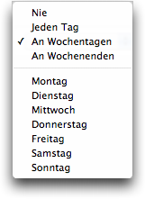

Test-Infobereich Automatische Test-Pausen
Automatische Test-Pausen
Dies ist der Abschnitt "Automatische Test-Pausen" im Test-Infobereich. Diese Funktion bietet die Möglichkeit, an bestimmten Tagen (oder jeden Tag) und zu bestimmten Zeiten die Prüfung dieses Tests pausieren zu lassen. Sehr praktisch, wenn z.B. ein beobachteter Server immer um Mitternacht neu gestartet wird, oder wenn Sie genau wissen, dass ein Server bestimmte Zeiten hat, an denen er nicht benutzt wird usw.
Wählen Sie aus dem Pop-up-Menü links in jeder Zeile zwischen Jeden Tag, An Wochentagen, An Wochenenden oder wählen Sie einen bestimmten Wochentag, um zu definieren, an welchem Tag oder welchen Tagen dieser Test nicht geprüft werden soll. Wählen Sie Niemals, wenn Sie diese Zeile zeitweilig deaktivieren wollen (die von Ihnen recht eingestellten Zeiten bleiben dann erhalten), oder klicken Sie den  -Button an, um die Zeile zu entfernen.
-Button an, um die Zeile zu entfernen.
- von :
- Geben Sie hier die Zeit ein, ab der der Test an den angegebenen Tagen pausieren soll. Klicken Sie den Pfeil unter dem Feld an, um die Zeiteinheit zu selektieren, und benutzen Sie die kleinen Pfeil-Buttons rechts davon, um die Werte zu erhöhen oder zu verringern. Oder klicken Sie einfach in ein Wertefeld und geben den neuen Wert ein und drücken dann [Tab], um zum nächsten Feld zu gelangen. Standardmäßig wird die aktuelle Zeit (oder die zuletzt benutzte Zeit) eingestellt.
- bis :
- Dieses Feld entspricht dem "von"-Feld, nur dass hier festgelegt wird, wann die automatische Pause beendet werden soll.
Klicken Sie diesen Button an, um die entsprechende Zeile zu entfernen.
 Klicken Sie diesen Button an, um eine neue Zeile hinzuzufügen, so dass Sie mehrere Pausen-Zeiträume festlegen können.
Klicken Sie diesen Button an, um eine neue Zeile hinzuzufügen, so dass Sie mehrere Pausen-Zeiträume festlegen können.